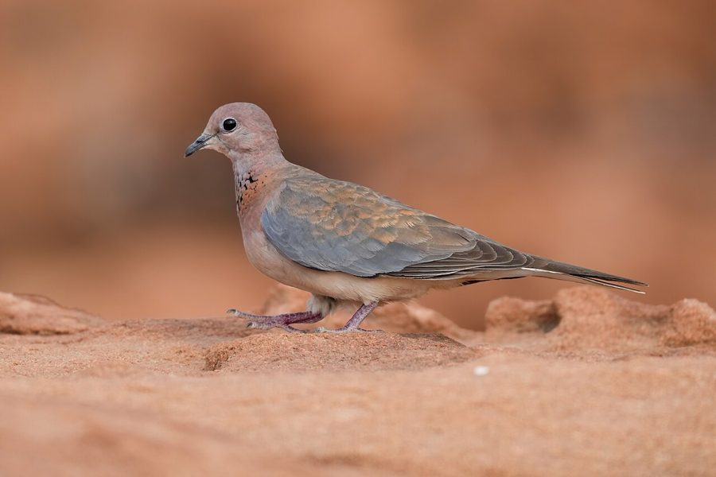

छोटी पंडुकLaughing Dove
Spilopelia senegalensis · Columbidae · BRD-0025

- Scientific name
- Spilopelia senegalensis (Linnaeus, 1766)
- Family
- Columbidae
- Hindi
- छोटी पंडुक
- Status here
- native
- IUCN
- LC
When to look कब देखें
Present all year.
छोटी पंडुक / Laughing Dove
Spilopelia senegalensis (Linnaeus, 1766) — Columbidae
छोटी पंडुक (हंसती पंडुक) — पूर्वी उत्तर प्रदेश के ग्रामीण इलाकों, शुष्क झाड़ियों, खेतों की मेड़ों और घरों के आहातों में पाया जाने वाला एक अत्यंत सुंदर और छोटा कपोत (dove) है। यह आकार में धवल पंडुक (Streptopelia decaocto) से छोटा और पतला होता है। इसकी सबसे बड़ी पहचान इसकी गर्दन के सामने के हिस्से पर बनी चमकीली लाल-भूरी और काली चौकोर चित्तीदार पट्टी (chequered patch) है। इसका नाम इसकी अत्यंत मधुर, मध्यम गति की "हंसने जैसी" पुकार (soft bubbling laughing call) पर पड़ा है, जो गाँव के बगीचों में सुबह और दोपहर के समय गूंजती है। यह मुख्य रूप से ज़मीन पर रेंगकर छोटे बीजों और अनाजों को चुगता है।
Quick Identification त्वरित पहचान
| Feature | Description |
|---|---|
| Size | Small, slender dove (24–26 cm total length); tail long and narrow |
| Colouration | Pinkish-brown head and breast; back warm ochre-brown; grey wing coverts |
| Neck Patch | A distinctive collar of black-and-rufous chequered feathers on the lower throat |
| Tail | Dark brown tail with broad white tips on the outer feathers, visible in flight |
| Eyes | Dark brown iris with a narrow red outer ring; bare orbital skin is greyish |
| Call | Soft, bubbling, five-syllable chuckle resembling quiet laughter |
Field tip: Look on garden fences or dry branches. When it flies off, it shows a distinctive flight pattern with the white corners of its tail flashing brightly against the dark tail center.
Morphology आकारिकी
Biometrics (typical measurements in the northern Indian plains):
| Measurement | Range |
|---|---|
| Total length | 240–260 mm |
| Wing (flattened chord) | 120–135 mm |
| Tail | 105–115 mm |
| Tarsus | 18–21 mm |
| Bill (culmen from base) | 13–15 mm |
| Weight | 70–95 g |
Plumage: The head and underparts are pinkish-brown, shading to white on the lower belly. The upper mantle is warm reddish-brown, while the back and rump are olive-brown. The outer wing coverts are a contrasting bluish-grey. The sides of the neck and lower throat feature a highly characteristic chequered collar of black feathers tipped with rufous-orange. The central tail feathers are dark brown; the outer ones are blackish-grey with broad white tips.
Bare parts: The bill is dark grey-black. The irises are dark brown. The legs and feet are dull pinkish-red.
Vocalisations
Laughing Doves are named for their distinctive chuckling call.
- Song / Contact Call: A soft, rolling, five-syllable coo: coo-coo-roo-do-doo, which rises slightly in pitch then falls, sounding like a gentle, bubbling laugh.
- Alarm Call: A sharp, nasal hiss or soft oo, uttered as the bird launches into a steep, noisy takeoff.
Ecological Role पारिस्थितिक भूमिका
Terrestrial granivore. Laughing Doves feed almost entirely on the ground.
- Weed seed controller: They feed heavily on small seeds of wild weeds and grasses, helping suppress weed density in crop borders.
- Predator support: They are a major food source for rural birds of prey, such as the Shikra, and domestic predators.
- Seed disperser: Some hard seeds pass through their digestive tract intact, aiding in plant dispersal.
Life Cycle / Phenology जीवन चक्र
- Breeding season: Breeds throughout the year, with peak activity between February and October.
- Nesting: They build a fragile nest in thorny bushes (Acacia), low tree branches, or on window sills of village homes.
- Nest structure: A very thin, flat platform of twigs and dry grass roots.
- Clutch size: 2 pure white, oval eggs.
- Incubation: 14–16 days, shared by both parents (female incubates at night, male during the day).
- Fledging: Both parents feed the nestlings with crop milk. The young fledge and leave the nest in 15–18 days.
Host Plants or Prey आहार
Primary food items:
- Grass Seeds: Seeds of Cynodon dactylon (Doob grass) and other wild grasses.
- Weed Seeds: Seeds of Brassicaceae and Amaranthaceae.
- Grains: Spilled seeds of wheat, mustard, and pearl millet (bajra).
Predators / Natural Enemies शत्रु
- Raptors: Shikra (Accipiter badius) is their primary predator.
- Corvids: House Crow (Corvus splendens) frequently plunders eggs and hatchlings from their flimsy nests.
- Reptiles: Common Sand Boa (Eryx conicus) and Rat Snake (Ptyas mucosa) raid low nests.
Agricultural / Human Relevance कृषि प्रासंगिकता
Beneficial weed controller. Laughing Doves are beneficial to agricultural fields because they consume massive quantities of weed seeds rather than raiding active crops.
They are highly tolerant of human activity and frequently nest in the verandahs and roofs of village houses, where they are welcomed as peaceful guests.
Expected Locally स्थानीय रूप से अपेक्षित
Not a field record. Written from published accounts for eastern Uttar Pradesh. No confirmed local sighting yet — if you have seen it, that is what the atlas needs.
अभी तक स्थानीय पुष्टि नहीं। यह विवरण प्रकाशित स्रोतों से है, किसी अवलोकन से नहीं।
A very common resident in Basti district, especially in rural gardens, homesteads, and thorn-hedges. Their soft, bubbling laugh is a constant background sound in dry summer afternoons. They are often seen dust-bathing on rural dirt tracks or feeding in empty crop fields after the harvest.
Distribution वितरण
Global range: Widespread across sub-Saharan Africa, the Middle East, Central Asia, and the Indian Subcontinent.
In India: Widespread in plains and dry regions, up to 1,500 m.
In Uttar Pradesh: A common resident in all districts, preferring drier scrub and agricultural fringes.
In Basti district / eastern UP: Common throughout Basti, especially in dry scrubby field margins.
Research Questions शोध प्रश्न
Anyone can investigate these | कोई भी इन प्रश्नों की जाँच कर सकता है
- How do Laughing Doves partition feeding sites when foraging alongside the larger Eurasian Collared Dove? — Observe mixed feeding flocks and document aggressive interactions.
- What is the nesting success rate of Laughing Doves in thorny bushes vs. human houses in your village? — Locate and monitor nests in both habitats.
- Does the calling rate of Laughing Doves decrease during peak summer temperatures? — Record calling activity at different times of the day in May.
- What percentage of their diet consists of weed seeds vs. agricultural crops in your area? / आपके क्षेत्र में इस पंडुक के आहार में जंगली बीजों का प्रतिशत कितना है और फसलों का कितना? — Examine feeding behavior in fields.
- How does the presence of domestic cats in a village affect the survival of fledglings? / गाँव में आवारा या पालतू बिल्लियों की उपस्थिति इस पंडुक के बच्चों के जीवित रहने की दर को कैसे प्रभावित करती है? — Monitor young doves post-fledging.
Similar Species मिलती-जुलती प्रजातियाँ
| Species | Key Difference | हिंदी |
|---|---|---|
| Streptopelia decaocto (Eurasian Collared Dove) | Larger; pale grey-brown; distinct black collar on back of neck; three-note call | धवल पंडुक — बड़ी और गर्दन के पीछे काली पट्टी होती है |
| Spilopelia chinensis (Spotted Dove) | Slightly larger; darker brown; neck has a broad black patch with white spots; different call | चित्तीदार पंडुक — गर्दन के पीछे सफेद चित्तीदार काला धब्बा |
| Columba livia (Rock Pigeon) | Much larger; stocky; blue-grey; lacks chequered neck patch; rolling coo | कबूतर — बहुत बड़ा और गठीला शरीर |
Field rule: Small size, warm pinkish-brown breast, distinctive rufous-and-black chequered collar on the front of the neck, and bubbling chuckling calls.
Taxonomy & Classification वर्गीकरण
Original description. Carl Linnaeus described the Laughing Dove as Columba senegalensis in 1766 in the 12th edition of Systema Naturae (Vol. 1, p. 283). The type locality was Senegal. The genus name Spilopelia was introduced by Carl Sundevall in 1873, combining the Greek spilos (spot) and peleia (dove). The species name senegalensis refers to the type locality in West Africa.
Subspecies. Six subspecies are recognised. The subspecies found in UP is:
| Subspecies | Authority | Range | Notes |
|---|---|---|---|
| S. s. cambayensis | (Latham, 1790) | India, Pakistan, Bangladesh | UP subspecies; nominate-like but wings are darker and brown upperparts warmer |
Family and order placement. Placed in the order Columbiformes, family Columbidae.
Phylogenetic notes. Spilopelia senegalensis was historically placed in Streptopelia but was separated into Spilopelia based on genetic studies showing it forms a distinct clade with S. chinensis.
IUCN status rationale. Listed as Least Concern (LC) due to its extremely large geographic distribution and stable population trends.
Photo Gallery फोटो गैलरी
References संदर्भ
- Linnaeus, C. (1766). Systema Naturae per regna tria naturae. Editio Duodecima. Laurentii Salvii, Holmiae, p. 283. [original description]
- Ali, S. & Ripley, S. D. (1999). Handbook of the Birds of India and Pakistan. Vol. 3. Oxford University Press, New Delhi.
- Grimmett, R., Inskipp, C. & Inskipp, T. (2011). Birds of the Indian Subcontinent. 2nd ed. Christopher Helm, London.
- Gibbs, D., Barnes, E. & Cox, J. (2001). Pigeons and Doves: A Guide to the Pigeons and Doves of the World. Pica Press, Sussex.
- BirdLife International (2024). Spilopelia senegalensis. IUCN Red List of Threatened Species. Ver. 2024.
- GBIF Occurrence Data — Spilopelia senegalensis, Uttar Pradesh (2010–2025).
Source file: species/fauna/birds/laughing_dove.md